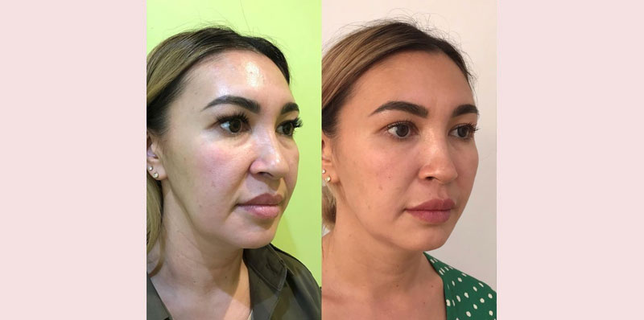

Beauty Routinesskaitomas per 5 min.
VEIDO PATEMPIMAS
Laikas keičia mus. Raukšlės tampa gilesnės, o oda ne tokia elastinga ir švytinti, kaip prieš keletą metų. Kai kurie priima natūralius pokyčius, bet daugelis moterų nori išlikti jaunos kuo ilgiau. Todėl didelės sumos leidžiamos reguliariems kosmetologo lankymams, brangioms priežiūros priemonėms ir geriausių plastinių chirurgų paslaugoms. O jeigu pasakysiu jums, kad yra natūralus būdas sustabdyti senėjimo procesą? Plastinės operacijos nedaro žmonių jaunesniais. Jos daro juos kitais. Papasakosiu jums, kaip išlyginti struktūrą ir patempti odą, pašalinti maišelius po akimis ir užtikrinti šviežią išvaizdą, naudojant tik vieną priemonę.

Iš pradžių noriu jums parodyti vieną iš tūkstančio dėkingų žmonių atsiliepimų. Mano pacientė išsamiai papasakojo savo istoriją. Negalėčiau perduoti jos žodžius geriau.

Kai man atsirado gilios raukšlės, pradėjau gėdytis dėvėti rūbus su iškirpte, o veido išvis neįmanoma uždengti rūbais. Mano kremai nebepadėdavo. Reikėjo ieškoti kitų problemos sprendimo būdų.
Mano finansinė padėtis neleisdavo man švaistyti pinigus kosmetologui. Pradėjau internete ieškoti įvairių priemonių nuo senėjimo ir veido masažo technikų. Daug ką išbadžiau, o ypač pačios pagamintas kaukes. Poveikio beveik nebuvo.
Galiausiai nustojau klausyti liaudies patarimų ir pradėjau ieškoti atsakymo pas specialistus. Radau straipsnį, kuriame kosmetologė pasakojo apie daugelio brangių kremų žalą ir neefektyvumą. Susidomėjau ir nusprendžiau kreiptis pas ją konsultacijos internete.
Proceso metu kosmetologė pasiūlė man išbandyti naują kremą . Jį visai neseniai išleido pirmaujanti kosmetikos įmonė, bet jis jau tapo populiarus tarp įžymybių, tinklaraštininkų ir grožio srities specialistų.

Kremas turi du didžiulius pliusus – universalumą ir natūralią sudėtį. Kremas tinka akims, veidui ir kaklui. Jo sudėtyje yra daug natūralių mineralinių komponentų ir mikroelementų, kurie ne tik gerina odos būklę, bet ir šalina raukšles, kurios nuodijo man gyvenimą. Svarbiausia, kad įsigyti vieną kremą, kuris šalina trūkumus visose probleminėse zonose, yra kur kas pelningiau.
Kremo sudėtis padeda gaminti kolageną. Su amžiumi ši funkcija blėsta, o kremas padeda odai atsinaujinti, kaip 20 metų. Iškart įvertinau poveikį. neužkemša porų, o atvirkščiai valo ir siaurina jas. Po poros dienų supratau, kad mano oda per dieną tapo mažiau riebalinga ir sausa (ji yra mišraus tipo). Per dvi savaites ji tapo drėgna ir patempta.
Kiekvieną dieną įdėmiai žvelgdavau į savo raukšles. Kai kurių neberasdavau. Kai mano kursas baigėsi, kartu su tuščiomis kremo pakuotėmis išmečiau 15 metų.
Esu dėkinga jums už tai, kad atskleidėte man tokią prieinamą jaunystės paslaptį. Dabar naudoju tik .

Man visada malonu gauti tokius šiltus laiškus su padėkomis. Galiu papasakoti daug panašių pavyzdžių. Pavyzdžiui, 45 metų Romualda.
Ji atėjo į konsultaciją senėjimui sulėtinti. Padariau jai pilingą ir uždėjau jauninamąją kaukę. Namie patariau naudoti kremą. Po trijų mėnesių pacientė atėjo pas mane su padėkomis. Kas pasikeitė per šį laiką? Pirmiausia dingo viršutinis negyvas epidermio sluoksnis, atsikūrė kraujotaka. Tai leido naudingoms kremo medžiagoms įsiskverbti į gilius odos sluoksnius. Sumažėjo maišeliai po akimis, gilios mimikos raukšlės, pasitempė veido ovalas, pasikėlė vokai. Odos kokybė tapo žymiai geresnė, nes dingo sausumas ir pigmentinės dėmės.

Martai jos 42 metų amžiuje labai nepatiko jos išvaizda. Sausumas, gilios raukšlės, nelygumai ir patinimas. Buvo suplanuota laipsniška korekcija su biorevitalizacija, mezosiūlais, botulotoksinais, pilingais tam tikra seka. Priežiūrai namie aš patariau naudoti . Tačiau dėl sveikatos problemų pacientė negalėjo atvykti ir tris mėnesius naudojo tik kremą. Rezultatai pranoko ne tik jos, bet ir visus mano lūkesčius. Dingo mimikos raukšlės, pigmentacija ir sausumas. Pagerėjo odos struktūra ir spalva. Visa tai be papildomų kosmetikos procedūrų.

Po tokio eksperimento pradėjau patarinėti naudoti daugeliui savo pacientų, kurie patyrė sunkumų su odos priežiūra.
Dauguma moterų neturi galimybės lankyti kosmetologo ir švaistyti pinigus lazerinei korekcijai, mezoterapijai, fileriams, biorevitalizacijai ir kitoms procedūroms. ne blogiau už profesinę priežiūrą aktyvuoja nuosavo odos kolageno formavimąsi, atkūria ją sluoksnis po sluoksnio ir daro raukšles mažiau pastebimas. Svarbiausia, kad kremas yra prieinamas kiekvienam ir jį įsigyti galima ne tik pas kosmetologą, bet ir tiesiogiai pas gamintoją.
Šiandien noriu padovanoti jums asmeninę nuolaidą kremui. Galite užsakyti jį su 50% nuolaida. Tikiuosi, kad ši priemonė pakeis dar kažkieno gyvenimą į gerą.